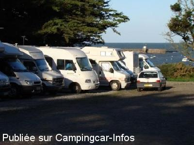

APCC = parkings réservés camping-cars sans services de :
PRÉFAILLES Pointe de Saint Gildas
(N° 547)
Accès/adresse :
Chemin des Pinettes
Pointe de Saint Gildas
44770 PRÉFAILLES
Pointe de Saint Gildas
44770 PRÉFAILLES
Latitude : (Nord) 47.13661° Décimaux ou 47° 8′ 11′′
Longitude : (Ouest) -2.23838° Décimaux ou -2° 14′ 18′′
Tarif : 2015
Stationnement : 5 €
Services :
Autres informations :
Ouvert du 15/04 au 15/10
45 emplacements
Stationnement limité 24 h
Tel : +33(0)240 216 222
http://www.prefailles.fr

Le 11/11/2010 par TATALL49
de
ronan
le 30/08/2015 :
Bonne aire proche de la mer boulanger le matin en periode estivale eviter le haut de l aire car le ramassage des ordures se fait tôt le matin reveille systematique
Bonne aire proche de la mer boulanger le matin en periode estivale eviter le haut de l aire car le ramassage des ordures se fait tôt le matin reveille systematique
de
rondeau hubert
le 30/08/2015 :
de passage ce week-end cet endroit est considéré comme un aire de cc mais ce n'est qu'un parking ,bien situé prés de la plage ,mais sans services et la personne qui passe le soir pour vous taxer 5€ est très désagréable et n'est pas du tout a l'écoute des gens j'ai donc refuser de payer les 5€ alors la * scandale * ,sinon cet aire est très priser le problème c'est pour capter la TV impossible car il y a beaucoup trop d'arbres ,voilas mon avis .
de passage ce week-end cet endroit est considéré comme un aire de cc mais ce n'est qu'un parking ,bien situé prés de la plage ,mais sans services et la personne qui passe le soir pour vous taxer 5€ est très désagréable et n'est pas du tout a l'écoute des gens j'ai donc refuser de payer les 5€ alors la * scandale * ,sinon cet aire est très priser le problème c'est pour capter la TV impossible car il y a beaucoup trop d'arbres ,voilas mon avis .
de
Eric (Ours_et_Fan)
le 28/05/2015 :
Aire sympa et très calme, un trentaine de places à 2 pas de la mer et des pistes cyclables. Tarif 5€ (en mai 2015).
Aire sympa et très calme, un trentaine de places à 2 pas de la mer et des pistes cyclables. Tarif 5€ (en mai 2015).
de
latouille bernard
le 05/07/2014 :
§ bonjour
de passage le 4 juillet 2014
le prix passe a 5€ en juillet et août ( 3 € le reste de l 'année ), en plus les places le long du chemin en entrant sont désormais interdites ( poses de grosses pierres et de chaînes )
§ bonjour
de passage le 4 juillet 2014
le prix passe a 5€ en juillet et août ( 3 € le reste de l 'année ), en plus les places le long du chemin en entrant sont désormais interdites ( poses de grosses pierres et de chaînes )
de
ferrand
le 19/07/2011 :
§ De passage une nuit le 17 juillet au soir
Aire prés de la pointe Saint Gildas
Mais aire victime de son succes
A cette époque, touche touche.
3 euros la nuitée , payable le soir par une employée municipale.
Boulanger à 08:00
Ne vaut le détour que pour sa proximité de l'eau.
§ De passage une nuit le 17 juillet au soir
Aire prés de la pointe Saint Gildas
Mais aire victime de son succes
A cette époque, touche touche.
3 euros la nuitée , payable le soir par une employée municipale.
Boulanger à 08:00
Ne vaut le détour que pour sa proximité de l'eau.
de
gwena guivarch
le 16/05/2011 :
super, belles balades autour, et pêche à pieds ( pour ceux qui aime), on y retournera je pense,aller à pieds prendre les jetons à l'office du tourisme, ou se garer sur l'aire de vidange
super, belles balades autour, et pêche à pieds ( pour ceux qui aime), on y retournera je pense,aller à pieds prendre les jetons à l'office du tourisme, ou se garer sur l'aire de vidange
de
TATALL49
le 11/11/2010 :
Aire très agréable en bord de mer. Sommes arrivés à 17 h le soir du 6.11.2010 (WE de la Toussaint), ne restaient que 2 places sur les 45.
Nuit très calme et réveil surprenant de voir tous les camping caristes partir avec seaux et pelles pour pécher les coquillages (bp d'habitués).
A recommander.
Aire très agréable en bord de mer. Sommes arrivés à 17 h le soir du 6.11.2010 (WE de la Toussaint), ne restaient que 2 places sur les 45.
Nuit très calme et réveil surprenant de voir tous les camping caristes partir avec seaux et pelles pour pécher les coquillages (bp d'habitués).
A recommander.
de
FordTransit 64
le 20/08/2010 :
Très beau parking en pente ! Il est indiqué payant mais personne n'est venu nous demande les 3€. A conseiller. Balade de nuit bord de mer avec les lucioles!
Très beau parking en pente ! Il est indiqué payant mais personne n'est venu nous demande les 3€. A conseiller. Balade de nuit bord de mer avec les lucioles!
de
jlch 57
le 17/08/2010 :
Il y a effectivement un parking sans les services à la Pointe Saint-Gildas, nous étions une bonne quarantaine sur cet emplacement. Les services se font à coté du garage Renault à la borne avec jeton. Merci à Préfailles.
Il y a effectivement un parking sans les services à la Pointe Saint-Gildas, nous étions une bonne quarantaine sur cet emplacement. Les services se font à coté du garage Renault à la borne avec jeton. Merci à Préfailles.
de
kado67
le 20/07/2008 :
De passage deux jours, encore quelques places de dispo, superbe endroit, plage, resto, vélo...
Quelqu'un est passé le lundi matin pour encaisser 1 nuit à 3€ (personne le dimanche!) et une camionnette passe tous les jours vers 8h15 pour le pain!
De passage deux jours, encore quelques places de dispo, superbe endroit, plage, resto, vélo...
Quelqu'un est passé le lundi matin pour encaisser 1 nuit à 3€ (personne le dimanche!) et une camionnette passe tous les jours vers 8h15 pour le pain!